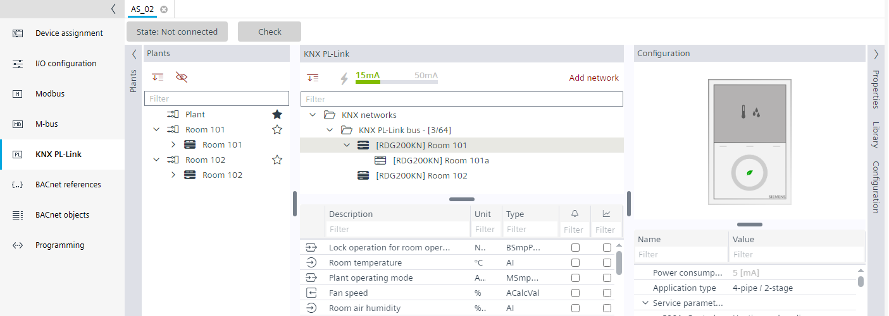

复制 RDG2 设备

在创建一个或多个重复项之前，建议为第一个 RDG2 设备完成以下任务，以减少以后的工程工作量：
- Application type defined
- Parameter configured
- Heating/cooling demand activated
- Subordinate devices added
- RDG2 device chart modified

- Go to Building > Building structure.
- Right-click a device and select Go to engineering.
- Open the KNX PL-Link task.
- In the KNX PL-Link area, select the device.
Note: Duplicating the device or room and device in the Plants navigation view is not supported. - Right-click the RDG2 device and select Duplicate.
- An additional RDG2 device is added.
- The parameters and configuration are set according the selected RDG2 device.
- The subordinate devices are copied.
- The device chart is copied according to the selected RDG2 device.